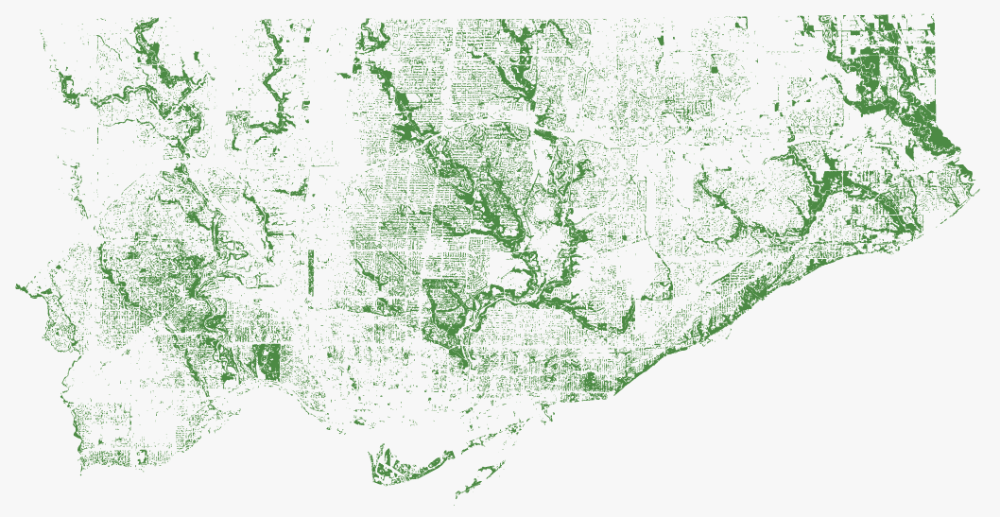

Toronto feature
Celebrating 130 years of Toronto: 11 ways to see the city
As Toronto turns 230 on July 29th, we started thinking about the geography of the city, both physical and human. The following maps explore a quickly changing city, illuminating the divisions and challenges that define both its present and its future.
August 27, 2023
Toronto has become a bustling, populous city
Population density, 2021
 Hover on each area for more information
Hover on each area for more information Tap on each area for more information
Tap on each area for more information
Source: Statistics Canada
Total households, 2021
Hover on each area for more informationTap on each area for more information
Source: Statistics Canada
But that growth has not been uniform
Population change between 2016 and 2021
Hover on each area for more informationTap on each area for more information
Source: Statistics Canada
Large swaths of the city are growing older
Change in the average age between 2016 and 2021
Hover on each area for more informationTap on each area for more information
Source: Statistics Canada
It's a wealthy city, but unevenly so
Median household income, 2021
Hover on each area for more informationTap on each area for more information
Source: Statistics CANADA
It's a city defined by immigration, but not in every neighbourhood
Percentage of first-generation Canadians in private dwellings, 2021
Hover on each area for more informationTap on each area for more information
Source: Statistics Canada
It is an expensive city to live in
Average home prices, June 2023
Hover on each area for more informationTap on each area for more information
Source: Toronto Regional Real Estate Board
But the streetscapes are often leafy
Tree coverage, 2018
Hover on each area for more informationTap on each area for more information
Source: City of Toronto
Many of its divisions are reflected in its politics
How Toronto voted in the June 2023 mayoral election. Voting trend between Olivia Chow and Ana Bailão.
Hover on each area for more informationTap on each area for more information
Source: City of Toronto
Crime can disproportionately impact different areas
Shootings and firearm discharges, 2014-2023
Hover on each area for more informationTap on each area for more information
Source: City of Toronto
Car thefts per 100,000 people, 2022
Hover on each area for more informationTap on each area for more information
Source: City of Toronto